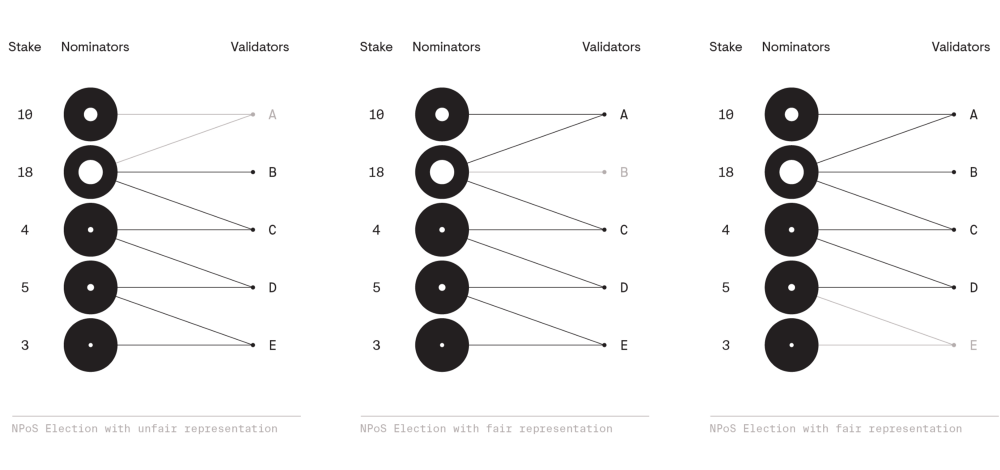
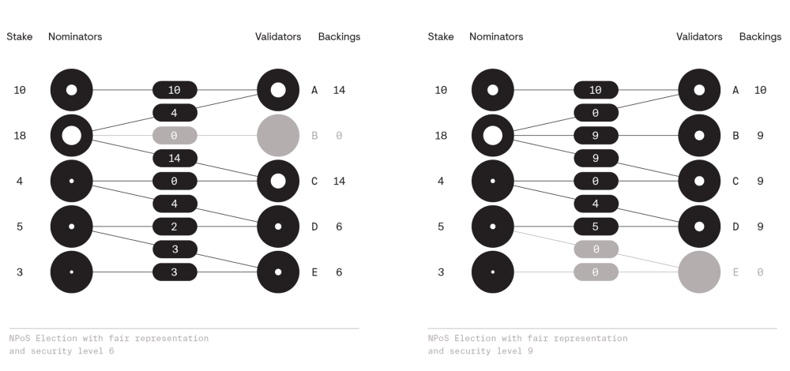

Basic Concepts¶
Hash Function¶
哈希函数是密码学中的一种加密算法，所谓函数呢，即是两个集合之间对应的映射关系。哈希函数的描述是：
A mathematical algorithm that maps data of an arbitrary size (often called the "message") to a bit array of a fixed size (the "hash value", "hash", or "message digest").
翻译过来就是：对任意输入，输出固定长度的字符
其工作流程如图所示：

对 hash 函数来说，有以下特性：
计算快
不可逆
冲突域1小
不可逆是其最为重大的特征，只能通过穷举法来破解，但对于现在的计算机来说，计算的时间过长，所以就认为不可被破解。
根据其输出的长度，有多种不同的具体实现：
MD5: 输出长度为 128 bits，即 16 bytes
SHA-1: 输出长度为 160 bits，即 20 bytes
RIPEMD-160: 输出长度为 160 bits，即 20 bytes，基于 MD42 设计的
Whirlpool: 输出长度为 512 bits，即 64 bytes，基于 AES 的改进
SHA-2:
SHA224: 输出长度为 224 bits，即 24 bytes
SHA256: 输出长度为 256 bits，即 32 bytes
SHA384: 输出长度为 384 bits，即 48 bytes
SHA512: 输出长度为 512 bits，即 64 bytes
Reference¶
Merkle Tree¶
Wiki 对 Merkle Tree 的定义是：
A tree in which every "leaf" (node) is labelled with the cryptographic hash of a data block, and every node that is not a leaf (called a branch, inner node, or inode) is labelled with the cryptographic hash of the labels of its child nodes.
以下是 Merkle Tree 的图示：

简单的概括来说，就是 hash 的 hash。
为什么要这么做呢？这和 hash 函数的第三个特性有关，冲突域小。虽然hash 函数的冲突域很小，但是对区块链来说， 其存在的安全漏洞还是比较大，那么怎么解决的，给它在加一层 hash，这样就能在既保证效率的同时还能保证安全。
Reference¶
Consensus Mechanism¶
Consensus Mechanism，共识机制。以下是个比较贴切的定义：
How the individual nodes of a distributed network agree on the current state of the system
共识共识，即对某件事的处理方式和结果打成一致。在计算机的分布式系统中，即是各个节点的当前系统中
的状态都有遵守一个协议，至于这个协议是什么，那就要下面要介绍到的 PoW/PoS/PoST/PoA。如果
对共识机制感兴趣的话，可以自行了解下Byzantine fault。
中文的话搜索拜占庭将军问题。
PoW¶
Proof of Work 的简写，工作量证明（说了也是白说），一种共识机制协议。目前 Ethereum 和 Bitcoin 使用的都是 PoW 协议，Ethereum 目前正准备将协议从 PoW 改为 PoS， 升级为 Eth2。
那么 PoW 到底是个什么呢？
在分布式网络中，最大的问题是要解决信任问题，就是你需要怎么证明这件事确实是你做的，而不是别人做的。 感谢 Hash 函数（那些到处宣扬数学无用论的人，祝愿他们永远也用不到数学），因为 Hash 函数的特性， 所以 PoW 就相当于在做数学题，以下只是形式上的描述，仅供参考，具体的实现要举例的要复杂的多。
$ Hash(x || nonce) = C $
其中 nonce 是系统随机分配的，C 是由系统根据当前的状态进行指定，Hash 函数的算法也是确定的，
所需要的是求出 x 的值，而因为 hash 算法是不可逆的，所以只能通过穷举法来尝试，而穷举法是很消耗
CPU 资源的，需要做大量的计算，因而叫做 PoW —— 工作量证明。其他人要验证也很简单，只需要将 x
和 nonce 代入函数，将得到的结果与 C 进行对比，因为哈希碰撞域很小，小到几乎可以忽略，因此可以
根据这个结果来判断对方是否正确，算出答案的这个节点就能够获得奖励。因此，区块链就是在凭空造币。
因为这种机制，所以又将做这种计算的工作叫做挖矿，执行计算工作的计算机叫矿机。
Tips. 第一个算出答案并同步上链的机器就证明了它算出了这个答案，而其他的晚了的被称为孤块，不同 的链对孤块的处理方式不同，BitCoin 是直接将孤块丢掉，Ethereum 是将孤块定义为 Uncle Block， 前 7 个 Uncle Block 都有奖励。
Pros and Cons¶
Pros：
无需成本，只要有矿机就可以开挖
运行稳定，目前已经在 Bitcoin 上运行了十多年了
实现简单
Cons：
耗电
开挖前需要对矿机硬件进行调研
大矿池容易控场，从去中心化又转变成中心化
Reference¶
[1]. PROOF-OF-WORK
PoS¶
Proof of Stake 的简写，权益证明，对 PoW 的一种改进。由 PoW 的特性可知，执行 PoW 的的计算机需要做大量的计算，这就意味着需要消耗大量的电量，同时也催生了一些定制的CPU： ASIC —— Application Specific Integrated Circuit。随着 BTC 的价格飙升，这些缺点 所带来的弊端也越来越严重，所以也不怪国家会打击 BTC 的矿场。
话题扯远了，回到 PoS，它具体是怎么工作的呢？首先，权益证明就是说，你需要先提交一定的 Token3 进行质押，质押了 Token 的机器叫做验证者（Validator）。验证者负责对提交上链的新的 block 进行 验证，而不需要进行大量大计算，只有在新的 block 验证不通过的时候才会创建新的 block，同时并不是说 你质押了就会一直验证，而是系统进行随机的抽选，而一旦验证者进行作弊或是离线，系统将会没收质押的 Token。 所以说验证者之间没有像 PoW 中那样——第一个出块才有奖励——的竞争关系。
从操作流程来看， PoS 对 PoW 的改进有：
省电
门槛低：这里的门槛指的是服务器的门槛，服务器的硬件不再像 PoW 那样高性能。
对中心化的抵抗更强：这会引入更多的节点加入网络，网络的节点越多，可信度就越高。
对 Ethereum 来说，PoS 也带来对 shard chains4 -- shard chains 更强劲的支持，而这是 Ethereum Network
扩展的关键性更新。
Pros and Cons¶
Pros:
硬件要求低：不需要对硬件进行调查，如果没有质押，只需要加入质押池
更去中心化：硬件要求低意味着可以让更多的计算机加入网络，以此来增加
51% 攻击5的抵抗性允许 sharding: 这个优点是针对 Eth2 来说的，Ethereum 的 shard chains 可在同一时间创建更多的block， 增加 transaction 的吞吐。
Cons:
相比 PoW 技术还不是很成熟
Reference¶
[1]. PROOF-OF-STAKE
[2]. shard chains
[3]. 51% attack
PoST¶
Proof of Spacetime 或 Proof of Space and Time 的简写，时间和空间证明，简称时空证明。每隔一段时间，随机 抽取存放在 miner6 上的存储数据，来验证这段时间内该 miner 确实存储了对应的数据。代表性的链是：filecoin
Reference¶
[1]. What sets it apart: Filecoin's proof system
PoA¶
Proof of Authority，基于认证证明，用于 Ethereum 的私链。Polkadot Network， 波卡网主网上线时使用，现已切换到 NPoS。
Proof-of-authority chains utilise a number of secret keys (authorities) to collaborate and create the longest chain instead of the public Ethereum network's proof-of-work scheme (Ethash).
目前还不是很完善，只有 TurboEthereum7 中的 flu8 客户端中使用。简单说就是通过密钥字段来区分不同的链。
Reference¶
[1]. PoA Private Chains
[2]. TurboEthereum Guide
NPoS¶
Nominated Proof of Stake 的简写。Polkadot 链中使用的共识机制。
A relatively new type of scheme used to select the validators who are allowed to participate in the consensus protocol.
PoS 中选举 Validators 的新方法。引入了 Nominators，即让更多的 Token 持有者加入共识中。就如同选举自己的 代表一样，只要是公民，就能选择自己看好的代表，同时有算法来保证代表的公平性，不能被过代表（over-representation， 想想“女拳师”们，过代表的典型），也不能 under-presentation（不知道中文翻译成什么更确切，意思就是代表性不足， 国人就参考人大代表的选举是什么情况，典型的 under-presentation）。现在来看 Polkadot 中的 validator 和 nominator。
Validator
Play a key role in highly sensitive protocols such as block production and the finality gadget. Their job is demanding as they need to run costly operations, ensure high communication responsiveness, and build a long-term reputation of reliability.
就是说 Validator 在 Polkadot 中掌握治理权，由他们来保障链中区块的生成以及最终确认，同时保证高响应。在 PoS 中，他们需要支付大额度的 Token 质押。一旦有 Validator 违反共识（确认假区块、离线、恶意攻击链上网络、执行修改后 的 node 软件等），那么所质押的 Token 就会被没收掉。当然，只要遵守共识，就能得到一定的收益，同时，和人大代表或议 员一样，数量上是有限制，不可能有很多个 validator。
nominators
A nominator publishes a list of validator candidates that she trusts, and puts down an amount of Dots at stake to support them with.
如果将 validator 比作人大代表，那么 nominator 就是超过 18 岁的公民了。nominator 可以通过质押自己手中的 DOT9
来为自己看好的 validator 候选人进行投票，不同于人大代表的选举，nominator 可以选举多个 validator 候选人。如果
自己支持的候选人被选中为 validator ，那么你支持的 validator 在获得收益时，你也能获得收益，反之亦然，validator
违反共识会被惩罚，你对其的支持的 DOT 也会被没收掉。在分配收益时，你可以自己选择将自己的收益给 validator，分配给
多少取决于你自己，你既可以将收益完全给 validator，自己不要那些收益，也可以完全保留收益，不和 validator 分享。
不同于 validator 的数量有限，只要你有 DOT，你就可以成为 nominator。这样就能让持有 DOT 的人都可以参与链上的治理。
那么选举的流程是怎么样的呢？不同于 PoS 的按质押的权重比，而是确保 nominator 的质押平均的分配到参选的 validator 上。为了确保这一点，选举需要有以下两点：
Fair representation
any nominator holding at least one n-th of the totall stake is guaranteed to have at least one of their trusted validators elected.
代表的公平性，即不能被 over-presentation，也不能被 under-presentation。这点是根据 Lars Edvard Phragmen 的 proportional justified representation 来实现的。其规则是：
如果要选举 $ n $ 个 validator，任意持有总质押的 $ \frac{1}{n} $ 及以上 token 的 nominator 至少要选择一个 validator 候选人。
以下图片展示了三个选举，其中第一个选举认为是不公平的，二、三认为是公平的。

Security
If a nominator gets two or more of its trusted validators elected, we need to distribute10 her stake among them, in such a wway that the validators' backings are as balanced as possible.
那安全性是怎么实现的呢？当 nominator 给多个 validator 候选人投票时，将其投票拆分，然后分别投给不同的候选人，最后
通过计算候选人的最终得票，将得票最少票数作为安全等级的级数。至于该如何拆分投票的数量，这是个 NP 完全问题，我暂时还没
去研究。如果要看具体的算法分析，可自行阅读参考文档中的 Nominated Proof-of-Stake 。
下图展示了 level 6 和 level 9 的选举。Level 越高，其安全性肯定是越好。

至于具体的细节方面，那时属于 Polkadot 里面的内容了，就不再这里介绍。
P.S 因为截止到我写这个的时候，我也没有完全看完文档，只是做了个 overview。具体的介绍应该会放的 Polkadot 的介绍 文档中。
Reference¶
[1]. Polkadot wiki: learn-staking
[2]. How Nominated Proof-of-Stake will work in Polkadot
[3]. GRANDPA: Block Finality in Polkadot
[4]. NP-complete problem
Zero-Knowledge Proof¶
Notes: it's a long term study subject, need more time to read paper & reference.
Non-interactive Zero-Knowledge Proof¶
Interactive Zero-Knowledge Proof¶
Reference¶
[1]. Wikipedia: Zero-knowledge proof
[2]. Wikipedia: Non-interactive zero-knowledge proof
[3]. Non-interactive zero-knowledge proof of knowledge and chosen ciphertext attack
[4]. Definitions and properties of zero-kenowledge proof systems
[5]. On the composition of zero-knowledge proof systems
- 1
冲突域，就是两个不同的输入会得到相同的输出
- 2
MD5的初版
- 3
Token，就是每个链发行的虚拟货币，如ETH就是Ethereum的Token。
- 4
在垂直方向拓展整条链，允许在同一时间在垂直方向创建多个block，也就相当于原来一个block的位置，之后可以放多个block，即block的超集（我自己这么理解的）。多个block组成了一个epoch，即epoch为block的超集。
- 5
所谓51%攻击，就是说如果有人/组织掌握了整个链上的51%的节点，那么该人/组织就能控制整条链。
- 6
即节点的实现，通俗点说就是挖矿软件
- 7
以太坊tookkit，集成了很多以太坊操作的工具。
- 8
TurboEthereum中的一个命令，用来与链进行交互
- 9
Polkadot的代币（Token）
- 10
NP-complete算法